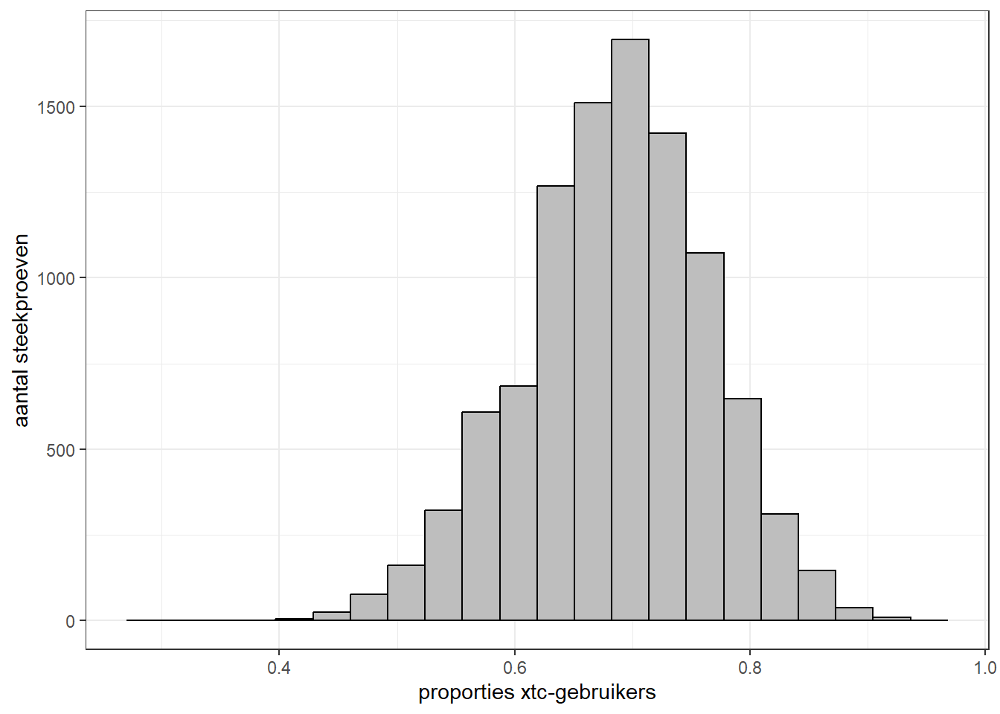

# proportie xtc-gebruikers berekenen
table(data_uitgaan$xtc_ooit) |> prop.table()
nee ja
0.3150289 0.6849711 We zijn tot nu toe met beschrijvende statistiek bezig geweest. Je hebt nu een idee hoe we data kunnen samenvatten en visualiseren, en hoe we de relaties tussen variabelen kunnen analyseren. Dit zijn nuttige skills voor de rest van de cursus en (wellicht) ook voor later in je carrière als criminoloog.
We hebben ons in de vorige hoofdstukken gericht op de xxx respondenten die in de dataset zitten. Hoewel interessant, vertelt dit ons nog vrij weinig over de bredere populatie van uitgaande jongeren. Terwijl dit juist het centrale doel is van statistisch onderzoek: op basis van een steekproef willen we uitspraken doen die voor deze gehele populatie gelden! Dit noemen we ook wel inferentie, of inferentiële statistiek. Om dit te begrijpen, is het handig de begrippen populatie en steekproef kort uit te leggen.
Populatie: De complete groep van analyse-eenheden waarin we geïnteresseerd zijn. In de criminologie gaat dit vaak om personen in een groep die we zo helder mogelijk proberen te identificeren en af te bakenen. Bijvoorbeeld alle leden van criminele motorclub of smokkelnetwerk. In deze cursus richten we ons in principe op alle jongeren in Nederland die weleens op stap gaan.
Steekproef: Een willekeurige selectie van eenheden uit de populatie. Willekeurige selectie betekent dat iedereen evenveel kans heeft om onderdeel te zijn van de steekproef (random sample). De steekproef is daarmee in principe een representatieve afspiegeling is van de populatie. De steekproef bestaat uit onze observaties in de dataset, in dit geval alle jongeren die de vragenlijst hebben ingevuld.
Het idee achter inferentie is eigenlijk vrij simpel. In de praktijk is het vaak lastig om data over de hele populatie te verzamelen. We kunnen onmogelijk alle uitgaande jongeren in Nederland interviewen, dat gaat om miljoenen mensen! Toch willen we iets zinnigs kunnen zeggen over deze populatie. Bijvoorbeeld over het aandeel jongeren dat een bepaalde drugs gebruikt. Op basis van statistische kennis weten we dat we met slechts een klein deel van die jongeren (de steekproef) toch met bepaalde zekerheid (en onder bepaalde assumpties) iets kunnen zeggen over de populatie als geheel.
Dit brengt echter de nodige uitdagingen met zich mee. Hoe kun je de gegevens uit de steekproef gebruiken om iets te zeggen over de populatie, en hoe weet je zeker dat dit vervolgens klopt? En welke assumpties maken we daarbij? Dit omvat vele aspecten van meetmethode en statistiek. Daar gaan we in dit hoofdstuk verder op in. Ook zullen we tijdens de onderwijsgroepen en colleges hier meer bij stilstaan. Het is echter goed te realiseren dat we niet al deze complexiteit kunnen behandelen.
Stel, we willen weten welk aandeel uitgaande jongeren in Nederland weleens xtc heeft gebruikt. Daarvoor kunnen we een proportie berekenen: welk aandeel jongeren van het totaal aantal het betreft. Ons doel is hier om de proportie xtc-gebruikers in de Nederlandse populatie van uitgaande jongeren te schatten (bij benadering), we zullen immers nooit zeker weten wat deze precieze proportie is. Daar zouden we alle uitgaande jongeren in de populatie voor moeten bevragen.
Een proportie is een voorbeeld van een parameter: een kwantiteit die we schatten die ons informatie geeft over de populatie. Dit kan een proportie zijn, maar bijvoorbeeld ook een gemiddelde of een correlatie.
We geven eerst kort wat notatie. We zijn geïnteresseerd in wat de proportie xtc-gebruikers is in de populatie uitgaande jongeren, deze populatieparameter noteren we als \(P\) . Omdat we deze parameter niet direct weten, nemen we een steekproef van jongeren uit deze populatie. De proportie xtc-gebruikers in deze steekproef wordt genoteerd als \(\hat{p}\).1
1 Hetzelfde principe geldt voor andere parameters waarin we mogelijk geinteresseerd zijn. Als je het gemiddelde van een populatie (\(\mu\)) wil schatten, trek je daarvoor een steekproef die uiteraard ook zijn eigen gemiddelde heeft (\(\bar{x}\))
Om het proces van het schatten van de populatieparameter \(P\) (proportie xtc-gebruikers) uit te leggen, doen we geheel volgens wetenschappelijke traditie een klein gedachte-experiment, maar deze keer ook met praktische toepassing. Voor dit experiment doen we alsof we wel data voor de gehele populatie hebben. In dit geval is deze populatie alle jongeren die onze dataset zitten (wat origineel de steekproef was). We berekenen eerst de proportie \(P\) voor deze populatie.
# proportie xtc-gebruikers berekenen
table(data_uitgaan$xtc_ooit) |> prop.table()
nee ja
0.3150289 0.6849711 We zien dat deze proportie 0,685 bedraagt, oftewel 68,5% van de uitgaande jongeren heeft ooit xtc geprobeerd.
Voor het gedachte-experiment gaan we er even vanuit dat we de proportie van de populatie niet kennen, maar juist willen schatten. Daarom trekken we uit de populatie een steekproef van 30 personen. Vervolgens berekenen we daarvoor de proportie xtc-gebruikers \(\hat{p}\) .
# set.seed() om voorbeeld te reproduceren
set.seed(010)
# steekproef trekken van 30 personen uit populatie
sample_30 <- slice_sample(data_uitgaan, n = 30)
# proportie xtc-gebruikers berekenen
table(sample_30$xtc_ooit) |> prop.table()
nee ja
0.3448276 0.6551724 We zien dat voor deze steekproef van 30 personen de proportie 0,655 is (65,5%). Dit lijkt dus op de populatie proportie \(P\) van 0,685, maar er zit wel een klein verschil tussen (0,685 - 0,655 = 0,030; 3,0% om precies te zijn).
Dit verschil tussen \(P\) en \(\hat{p}\) treedt in principe altijd op bij een willekeurige steekproef en de grootte ervan varieert per genomen steekproef. Laten we dit nader te bekijken. We trekken nu tien willekeurige steekproeven van 30 personen en berekenen alle steekproefproporties van xtc gebruikers.
set.seed(010)
# 10 keer een steekproef van 30 trekken en de proportie xtc-gebruikers berekenen
proporties_xtc <- replicate(10, {
sample_30 <- slice_sample(data_uitgaan, n = 30)
mean(sample_30$xtc_ooit == "ja", na.rm = TRUE) # na.rm om eventuele missenden waarden te verwijderen
})
# proporties bekijken
print(proporties_xtc) [1] 0.6551724 0.6666667 0.7586207 0.7333333 0.5333333 0.8000000 0.6666667
[8] 0.6896552 0.7586207 0.5862069Je ziet dat sommige proporties \(\hat{p}\) vrij dicht bij \(P\) liggen (bijvoorbeeld 0,690) terwijl anderen er ver weg van liggen (0,533). We zien dus dat er variatie is tussen steekproeven in de proporties.
Een uitgangspunt van inferentiële statistiek is dat een steekproef één mogelijke uitkomst is van een denkbeeldig universum met een oneindig aantal uitkomsten. Deze uitkomsten zijn willekeurige variaties op een onderliggende ‘ware’ populatieparameter (in dit geval \(P\)). Als we steekproeven oneindig zouden blijven herhalen, dan zal uiteindelijk het gemiddelde van alle mogelijke uitkomsten deze ware populatieparameter weergeven. Dit omdat eventuele afwijkingen het gevolg zijn van willekeurige variatie.
Als je hoofd inmiddels begint te duizelen, geen paniek. We komen hier later meer op terug. Ook zullen we vooral kijken naar wat dit in praktijk betekent.
Zoals je wellicht kunt voorstellen, is het logisch niet mogelijk om oneindig steekproeven te blijven trekken. Daarom doen we dat hier bij benadering door ‘slechts’ 10.000 steekproeven te trekken van 30 personen.
set.seed(010)
# 10 keer een steekproef van 30 trekken en de proportie xtc-gebruikers berekenen
proporties_xtc_10k <- replicate(10000, {
sample_30 <- slice_sample(data_uitgaan, n = 30)
mean(sample_30$xtc_ooit == "ja", na.rm = TRUE) # na.rm om eventuele missenden waarden te verwijderen
})Vervolgens visualiseren we de proporties xtc-gebruikers van al deze steekproeven in een histogram, en berekenen we enkele centrum- en spreidingsmaten.
# histogram maken
ggplot(as.data.frame(proporties_xtc_10k),
aes(x = proporties_xtc_10k)) +
geom_histogram(bins = 22, fill = "grey", colour = "black") +
theme_bw() +
ylab("aantal steekproeven") +
xlab ("proporties xtc-gebruikers")
# berekenen centrum- en spreidingsmaten
summary(proporties_xtc_10k) Min. 1st Qu. Median Mean 3rd Qu. Max.
0.3000 0.6333 0.6897 0.6849 0.7333 0.9667 sd(proporties_xtc_10k)[1] 0.08147867Wat je hierboven ziet, staat ook wel bekend als de steekproevenverdeling. Dat wil zeggen, de verdeling van de mogelijke uitkomsten (hier: proporties) van herhaalde steekproeven (in dit geval: 10.000 steekproeven van 30 personen betreffende de proportie xtc-gebruikers).
Er vallen een paar dingen op als we bovenstaande gegevens kijken. Ten eerste lijkt de verdeling van steekproefproporties nagenoeg op een normale verdeling, zoals we eerder hebben gezien (Normale verdeling). Dit betekent dat de steekproevenverdeling dezelfde eigenschappen heeft als een normale verdeling, zoals dat het kansverdeling is (we kunnen de kans op een bepaalde uitkomst berekenen) en dat het een gemiddelde en een standaarddeviatie heeft. Je kunt verder zien dat het gemiddelde van 0,685 nagenoeg gelijk is aan de mediaan van 0,690, wat verder indiceert dat we hier met een normale verdeling te maken hebben (symmetrie). Het minimum (0,300) en maximum (0,967) tonen verder bij enkele steekproeven de proportie juist ver af zit van het populatiegemiddelde, maar de verdeling toont tevens dat dit uitzonderlijke uitkomsten zijn.
Het meest interessant is echter dat de steekproevenverdeling van proporties allesbehalve willekeurig is. Het resulteert immers in een normale verdeling! En dat niet alleen: de gemiddelde proportie van de steekproevenverdeling (\(\bar{x}_\hat{p}=0,685\)) is afgerond gelijk aan het populatiegemiddelde (\(P=0,685\)). In het algemeen geldt dan ook dat het gemiddelde van de steekproevenverdeling gelijk is aan het populatiegemiddelde.
Hoe komt dat? Stel dat je een steekproef trekt met een selectie personen die op alle denkbare kenmerken gelijk zijn aan alle personen in de populatie. Het is met andere woorden een perfecte afspiegeling van de populatie. In dit geval vind je dat \(P=\hat{p}\) . Dit is echter bijna nooit het geval. Omdat een steekproef willekeurig wordt getrokken, zul je bijna altijd toevallige afwijkingen hebben. Dat je bijvoorbeeld net iets meer xtc-gebruikers selecteert dan niet-gebruikers ten opzichte van de verhouding in de populatie, wat weer invloed heeft op de hoogte van de proportie xtc-gebruikers. Maar, ervan uitgaande dat elke afwijking willekeurig is, zal bij oneindige herhaling van steekproeven het gemiddelde van alle afwijkingen 0 zijn (het is immers willekeurig of je een hogere of lagere proportie krijgt in een steekproef).
Een ander interessant gegeven is dat de steekproevenverdeling naast een gemiddelde zijn eigen standaarddeviatie heeft. Dit is een speciale variant van de standaarddeviatie, en wordt de standaardfout genoemd. Deze noteren we als \(\sigma_{\hat{p}}\). 2 De ‘fout’ geeft dus eigenlijk aan in hoeverre een steekproefuitkomst (proportie v/d steekproef) afwijkt van de populatieparameter (proportie v/d de populatie). De standaardfout is belangrijk omdat we deze, zoals we later zullen zien, kunnen gebruiken om te berekenen wat de foutmarge van onze steekproef is met betrekking tot het schatten van de populatieparameter.
2 goed om te weten: het aantal observaties (respondenten) in de steekproef noteren we met \(n\); het aantal eenheden (personen) in de populatie noteren we met \(N\)
Knoop het dus goed in je oren: de standaardfout is de standaarddeviatie van de steekproevenverdeling. Deze noteren we bijvoorbeeld als \(\sigma_{\hat{p}}\) voor proporties en \(\sigma_{\bar{x}}\) voor gemiddeldes.
Dit is wat anders dan de gebruikelijke standaarddeviatie, die gaat om originele variabelen in de dataset die iets proberen te meten (bijvoorbeeld leeftijd of gemoedstoestand op dinsdag)
Wat we zojuist hebben aangetoond, is de centrale limietstelling. Deze houdt in dat:
De regels rondom de centrale limietstelling zijn net wet anders bij minder dan 30 observaties, zie daarvoor bijvoorbeeld Statistiek als hulpmiddel of het internet.
Doordat we de standaardfout kennen, kunnen we in combinatie met de empirische regel bepalen hoe waarschijnlijk een bepaalde (willekeurige) steekproefuitkomst voorkomt. Daar gaan we zo mee verder. Eerst laten we de magie van de steekproevenverdeling en centrale limietstelling even op ons inwerken.
Degenen die een beetje bij zijn gekomen van het conceptueel geweld hierboven (en wellicht ook degenen voor wie de verwarring compleet is), zullen wellicht inmiddels aan het denken zijn: ja dat is allemaal leuk en aardig die 10.000 steekproeven, maar in de praktijk helemaal niet werkbaar. We kunnen immers niet voor elk onderzoek 10.000 steekproeven uitvoeren, dat kost tijd en geld en na de eerste steekproef is de lol er eigenlijk ook wel een beetje vanaf.
Gelukkig is hier een eenvoudige oplossing voor. Het blijkt namelijk statistisch zo te zijn dat we de standaardfout kunnen berekenen op basis van één steekproef. We hoeven dus helemaal geen 10.000 steekproeven te trekken om de standaardfout te berekenen!
Voor een het berekenen van de standaardfout van proporties \(\sigma_{\hat{p}}\) geldt3:
3 Voor het berekenen van de standaardfout van steekproefgemiddeldes \(\sigma_{\bar{x}}\) geldt een andere formule (zie Formuleblad)
\[\sigma_{\hat{p}}=\sqrt\frac{\hat{p}(1-\hat{p})}{n}\]
In deze formule zie je dat de proportie van de steekproef \(\hat{p}\) wordt vermenigvuldigd met \((1-\hat{p})\) , vervolgens gedeeld door het aantal observaties in de steekproef \(n\) en daar de wortel van wordt genomen.4
4 Goed om te weten: het aantal observaties (respondenten) in de steekproef noteren we met \(n\); het aantal eenheden (personen) in de populatie noteren we met \(N\)
Dat de \(n\) in deze formule in de noemer staat (onder de streep) heeft een belangrijke implicatie. Dit betekent namelijk dat hoe meer data we verzamelen voor een steekproef (het aantal observaties), hoe kleiner de standaardfout wordt. En met een kleinere standaardfout kunnen we weer meer exact de populatieparameter schatten! (komen we later nog op terug)
Laten we dit even illustreren aan de hand van een voorbeeld. We selecteren willekeurig 10, 30, en 100 mensen uit de dataset, wat neerkomt op steekproeven met een verschillend aantal observaties. Ook berekenen we de standaardfout voor de gehele dataset (xxx respondenten).
set.seed(010)
# Functie om de standaardfout van een proportie te bereknen
se_proportie <- function(x) {
x <- na.omit(x)
p <- mean(x == "ja")
sqrt(p * (1 - p) / length(x))
}
# Steekproeven trekken van 10, 30 en 100 respondenten
steekproef_10 <- slice_sample(data_uitgaan, n = 10)
steekproef_30 <- slice_sample(data_uitgaan, n = 30)
steekproef_100 <- slice_sample(data_uitgaan, n = 100)
# Standaardfouten berekenen
se_proportie(steekproef_10$xtc_ooit) # 10 respondenten[1] 0.1656347se_proportie(steekproef_30$xtc_ooit) # 30 respondenten[1] 0.083666se_proportie(steekproef_100$xtc_ooit) # 100 respondenten[1] 0.04661037se_proportie(data_uitgaan$xtc_ooit) # xxx respondenten (complete dataset)[1] 0.02497315Je ziet dus dat de standaardfout steeds kleiner wordt naarmate we een grotere steekproef hebben. Bij 10 respondenten is de standaardfout nog 0,16; bij xxx respondenten is deze 0,02. Dit toont dat, als de assumpties kloppen, meer data meer beter is.
Je hebt het al een paar keer voorbij horen komen: onder bepaalde assumpties kunnen we ervan uitgaan dat een schatting van de populatieparameter klopt.5 Maar wat zijn die assumpties? In de statistiek gaan we hier vaak makkelijk aan voorbij of kijken we er liever van weg, waarschijnlijk omdat de waarheid wat ongemakkelijk is en ook ingewikkeld. We hechten er echter veel waarde aan dat je toch op de hoogte bent van enkele assumpties. Omdat je daardoor beter begrijpt wat je wel en niet kan met statistiek. En dat je uiteindelijk hopelijk kritischer zal kijken naar veel statistieken die je in het dagelijks leven voorbij ziet komen.
5 Kleine waarschuwing: wat nu volgt kan de eerste keer een beetje pijn doen aan je brein.
Een eerste belangrijke assumptie is dat eventuele afwijkingen/fouten in de steekproef willekeurig zijn (willekeurige fout; random error in het Engels). Dit hebben we al deels besproken in dit hoofdstuk. Er zal altijd een zekere mate van toeval zijn bij het trekken van steekproef. Zolang dit een willekeurige afwijking betreft, is er niet zoveel aan de hand. We weten immers wat de kans is op een bepaalde mate van toeval (hoever een steekproefuitkomst van \(P\) of \(\mu\) kan liggen) en kunnen daarmee rekening houden bij het schatten van de populatieparameter.
Helaas komt het in steekproefonderzoek vaak voor dat fouten niet willekeurig zijn, maar eerder systematisch van aard. Dit kan op diverse wijzen gebeuren en zullen we daarom niet uitputtend behandelen hier. We geven een aantal voorbeelden om dit te verhelderen.
Een type systematische fout (systematic error) is dat je selectie van respondenten niet willekeurig is omdat er een structurele afwijking in zit. Dit kan zijn omdat een bepaalde groep binnen de populatie waar je in geïnteresseerd bent om een specifieke reden niet deelneemt aan onderzoek. Jongeren die een problematische hoeveelheid xtc gebruiken, zullen vaker vermoeid zijn en wellicht mentale problemen hebben. Daardoor zullen ze minder snel meedoen aan surveyonderzoek vanwege een gebrek aan focus of andere prioriteiten. Wanneer deze groep systematisch ondervertegenwoordigd is in je steekproef, zul je de proportie xtc-gebruikers (en ook de frequentie van gebruik) steeds te laag in schatten. Hoe vaak je ook een steekproef afneemt! Het voorkomen van dit soort systematische fouten is erg lastig en vergt goede kennis van de doelpopulatie en goed zicht op het proces van dataverzameling.
Een ander type systematisch fout kan in de vragenlijst zelf zitten. Stel dat die groep problematische en hoog-frequente gebruikers wel meedoet aan je onderzoek, maar in de vragenlijst hun gebruik stelselmatig onderrapporteert. Dat ze in hun antwoorden aangeven minder te gebruiken dan ze daadwerkelijk doen, vanwege sociale wenselijkheid of schaamte. Dan schat je het gebruik nog steeds te laag in.
Bij het verzamelen van steekproefdata zijn er verder diverse praktische uitdagingen. Het idee van een willekeurig getrokken steekproef (random sample) veronderstelt dat je een overzicht heb van je populatie (alle uitgaande jongeren in Nederland tussen de 16 en 35 jaar) en vervolgens potentiële respondenten op willekeurige wijze selecteert. Maar hoe krijg je dat overzicht, het gaat immers om honderdduizenden zo niet miljoenen personen? Je zou bijvoorbeeld kunnen beginnen bij het willekeurig selecteren van plekken in Nederland (steden en dorpen), vervolgens een aantal uitgaansgelegenheden willekeurig selecteren (cafés, kroegen, discotheken, festivals, etc.) en dan op die plekken willekeurig jongeren benaderen om mee te doen aan het onderzoek. Je kunt je voorstellen dat dit laatste al lastig genoeg is: hoe ga je in drukke discotheek willekeurig mensen benaderen? Nog los van het gegeven dat sommige mensen te veel onder invloed zijn om een vragenlijst serieus in te vullen.
In het oorspronkelijke onderzoek (Het Grote Uitgaansonderzoek), waar onze dataset op is gebaseerd, is de werving van respondenten via social media gegaan. Het Trimbos instituut heeft via advertenties en een wervingscampagne respondenten geworven via Instagram, Snapchat en Facebook. Hoewel dit geschikte platformen zijn om uitgaande jongeren te bereiken, is de selectie van respondenten allesbehalve willekeurig. In plaats van willekeurig te selecteren uit de populatie is het proces hier eerder andersom: je stuurt een bericht de wereld in om te kijken wie uit de populatie er mee wil doen aan het onderzoek. Ook zal niet iedereen uit de doelpopulatie op deze platformen zitten (mensen zonder social media).
Dit wil niet zeggen dat het onderzoek geen zin heeft of meteen niet valide is. Het gaat er eerder om dat we ons bewust zijn van de beperkingen en mogelijke fouten, zodat we geen onjuiste uitspraken doen op basis van de data en onze methoden. In theorie stellen we dat als de selectie van respondenten totaal willekeurig plaatsvindt, dat er geen systematische fouten zijn op basis van zowel geobserveerde (variabelen die we meten) en niet-geobserveerde kenmerken (wat we niet meten in de vragenlijst). In de praktijk is het vaak wat rommeliger.
De hier genoemde fouten hebben te maken met de validiteit en betrouwbaarheid van kwantitatief onderzoek. Dit zijn belangrijke aspecten waar we in de colleges en onderwijsgroepen ook meer aandacht aan zullen besteden.
Naast mogelijke systematische fouten zijn de filosofische aannames achter statistiekonderzoek niet altijd even goed toepasbaar. Zoals eerder gesteld is het idee achter de dominante manier van statistiek bedrijven dat er zoiets bestaat als een ware populatieparameter \(P\) die we in theorie kunnen achterhalen door een oneindig aantal onderzoeken (bijvoorbeeld experimenten of steekproeven) uit te voeren. Er wordt aangenomen dat de populatieparameter een constante, vaste waarde heeft. Als we onderzoek blijven herhalen, krijgen we steeds net wat andere data door willekeurige fouten. De data varieert dus, de populatieparameter niet. Op de lange termijn zal het gemiddelde van al deze onderzoeken echter leiden tot de ware \(P\) (zie sec-steekproefcentraallimiet). Dit denken gaat dus uit van soort denkbeeldig universum waarin we deze onderzoeken oneindig kunnen herhalen. In de praktijk voeren we het onderzoek vaak eenmaal uit.
In sommige situaties is deze manier van denken geschikt. Als we geïnteresseerd zijn in xtc-gebruik onder uitgaande jongeren in Nederland, kunnen we ervan uitgaan dat in er in deze populatie een zekere constante proportie van gebruik bestaat. Bij herhaalde onderzoeken zullen we dan los van toevallige fouten naar verwachting min of meer steeds op dezelfde proportie uitkomen (zie het voorbeeld onder sec-steekproefcentraallimiet), althans op de korte tot middellange termijn. Over de tijd zal het gebruik als het gevolg van maatschappelijke en culturele veranderingen variëren.
Voor meer specifieke vragen geeft de aanname van een universum met een ware populatieparameter die we ontdekken door oneindig herhaalde onderzoeken wel problemen (lees deze zin gerust nog een keer). Neem als voorbeeld dat we geïnteresseerd zijn in de proportie xtc-gebruikers op het festival Lowlands in 2026. Dit is een eenmalig evenement. We kunnen er wellicht van uitgaan dat er zoiets is als een constante populatieparameter ‘proportie xtc-gebruik’ voor dit festival, maar we kunnen in de praktijk geen herhaalde onderzoeken blijven doen om dit te meten. Deze editie van 2026, waar we specifiek in zijn geïnteresseerd, vind immers maar één keer plaats en we kunnen dus ook maar één keer onderzoek doen. De statistiekfilosofie laat ons hier in de steek.
Dat de filosofie niet helemaal kloppend is voor de onderzoekspraktijk is niet per se een probleem, onderzoek vergt wel vaker wat conceptueel rekwerk. Desalniettemin moeten we ons goed rekenschap geven van deze assumpties.
Je hersenen zullen vast een beetje kraken na dit hoofdstuk. In essentie komt het erop neer dat: